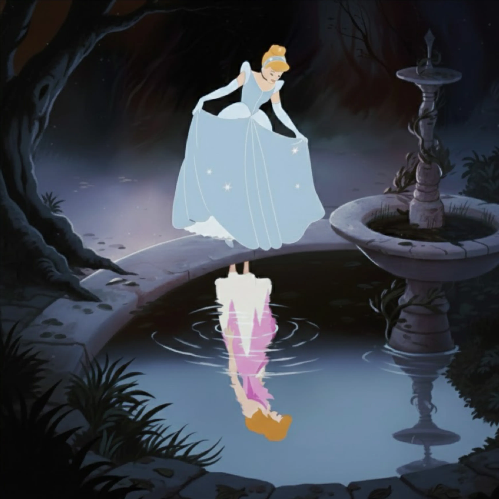
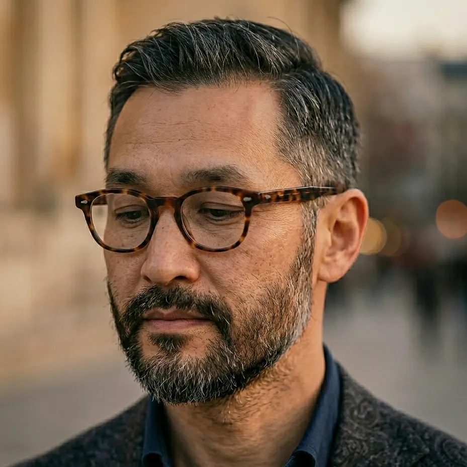

違和感をめぐる対話——安倍まりあ
（柏木）
このテキストを読んで、まず胸が締めつけられるような感覚がありました。 子どもの頃に童話を読んでいたときの、 あの「なんか変だな」という、言葉にならない違和感を、 あなたがこんなに丁寧に、でも鋭く掬い上げていることに驚きました。 特に『裸の王様』のところ。 王様が「騙された被害者」ではなく、自ら幻想を支える側に回っている、 という読み方がすごく新鮮で。 多くの人は「無知を恐れたから」とか「権力を守りたかったから」と説明しがちだけど、 あなたは理由をあえて語らせないままにしている。 それがとても効いていると思います。
（安倍）
……そうですね。 私の中では、王様は「疑うより先に、装うことを選んだ」としか言いようがなくて。 理由を付けると、逆にその選択の重みが薄れてしまう気がしたんです。
（柏木）
わかる気がします。 理由を付けると、観客は「なるほど、そういう心理か」と納得して終わってしまう。 でも理由を抜くことで、王様の身体が自ら「王であること」を引き受けていく過程が、むき出しのまま残る。 それと、ディズニー映画『シンデレラ』のドレスの話も刺さりました。 彼女は自分で用意した古着のドレスで舞踏会に行こうとしたのに、 物語はそれをすぐに消し、魔法のドレスに置き換える。 努力より「外から与えられた正しさ」が優先される、あの残酷さです。

（安倍）
あの古着は、彼女の母の形見でした。 それを破られ、絶望しているところに魔法使いが現れ、より良いドレスを与える。 元に戻すだけでも良かったはず——少なくともシンデレラにとっては。 でも、彼女はその瞬間を喜び、私は逆に傷ついた。 努力を踏みにじられたことの残響が、喜びに押し消される。 物語は、結局「不十分」を否定し、誰かの基準で「ふさわしい」を与える。 それがずっと、引っかかっていました。
（柏木）
そして作品では、完全に裸にはしない。 その「中途半端な地点」に立つ人物を描く、 というのが, この連作の核心なんですね。 半分だけ剥がされた状態の人物…… その中途半端さを描くことに、どんな意味を感じているんですか？
（安倍）
はい。裸だからといって、真実があるわけじゃない。 役割と身体はまだ互いに探り合い、ぎこちなく絡まりながら存在している。 意味が完全に役割に落ち着かないとき、身体はどれだけそれを抱え込めるのか ——その不安定さを、ずっと見つめてきました。
（柏木）
その問いが、観る側にもそのまま投げかけられる感じがします。 作品を前にすると、自分の中にも似たような「引き受けてしまっている役割」がいくつもあることに気づかされて、少し息苦しくなる。 でもそれが、不思議と心地いい息苦しさで…… 逃げられない場所に立たされている感じ。
（安倍）
……ありがとうございます。 そう言ってもらえると、言語化しきれ難かったものが、少し形になった気がします。
（柏木）
最後に一つだけ。 この違和感は、子どもの頃からずっとあったものですよね。 それが今、作品として出てきたのは、何かきっかけがあったんですか？
（安倍）
明確なきっかけはなくて。 ただ、歳を重ねるにつれて、自分の身体が社会から期待される「装い」を、 無意識に引き受けている瞬間が増えていることに気づいて。 子どもの頃の違和感が、急に輪郭を帯びてきた感じです。 それを、今なら少しは形にできるかもしれないと思ったんです。
（柏木）
なるほど。だからこそ、このテキストも、作品と同じ温度で書かれているんですね。 本当に、素晴らしい連作だと思います。 この対談が、誰かの胸の奥に沈んでいた違和感を、 少しだけ浮かび上がらせるきっかけになればいいなと思っています。
（安倍）
……ありがとう。あなたとこうして話せて、私の中でも、また何かが動き始めた気がします。
